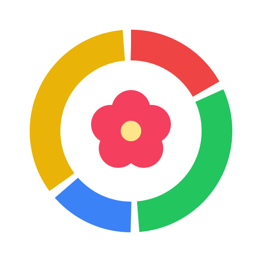

CycleSync
Your menstrual cycle phases as small daily icons in Google Calendar (🔴 🌱 🦋 🌙), with tips for every day.
First time? What Google will ask
- Sign in with your Google account and tap Review permissions.
- Google shows “Google hasn’t verified this app”. CycleSync is a free personal project that Google hasn’t reviewed, so tap Advanced, then Go to CycleSync (unsafe).
- Keep the Google Calendar box ticked and tap Continue.
- Pick the day your last period started. CycleSync fills a new “🌸 Cycle Tracker” calendar for the next year.
Put it on your phone
Android (Chrome): tap Install on this device above, or ⋮ → Add to Home screen.
iPhone (Safari): tap Share → Add to Home Screen.
Privacy
CycleSync runs inside your own Google account. Your start date is saved privately there, and the only calendar it changes is its own “🌸 Cycle Tracker”. Nothing is sent anywhere else.
To stop using it, choose Remove CycleSync from my calendar in the app’s menu, then remove its access at myaccount.google.com/connections.
Phases are estimates for a regular 28-day cycle, not medical advice or a method of contraception. Source code